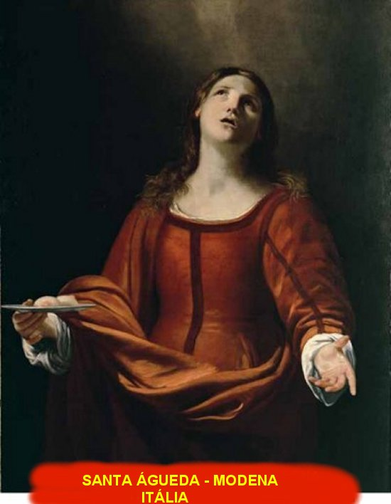

"SANTA ÁGUEDA"

SANTA ÁGUEDA é uma das mais gloriosas heroínas da Igreja primitiva e cuja intercessão é invocada, no Cânon da Santa Missa.
=ÍNDICE=
- PRELÚDIO DA VIDA
- PRESENÇA DIVINA
- ORAÇÕES + FOTOGRAFIAS + CONVITE + E-MAIL


 - ORAÇÕES +
FOTOGRAFIAS + CONVITE + E-MAIL
- ORAÇÕES +
FOTOGRAFIAS + CONVITE + E-MAIL